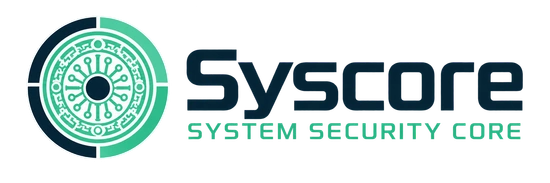
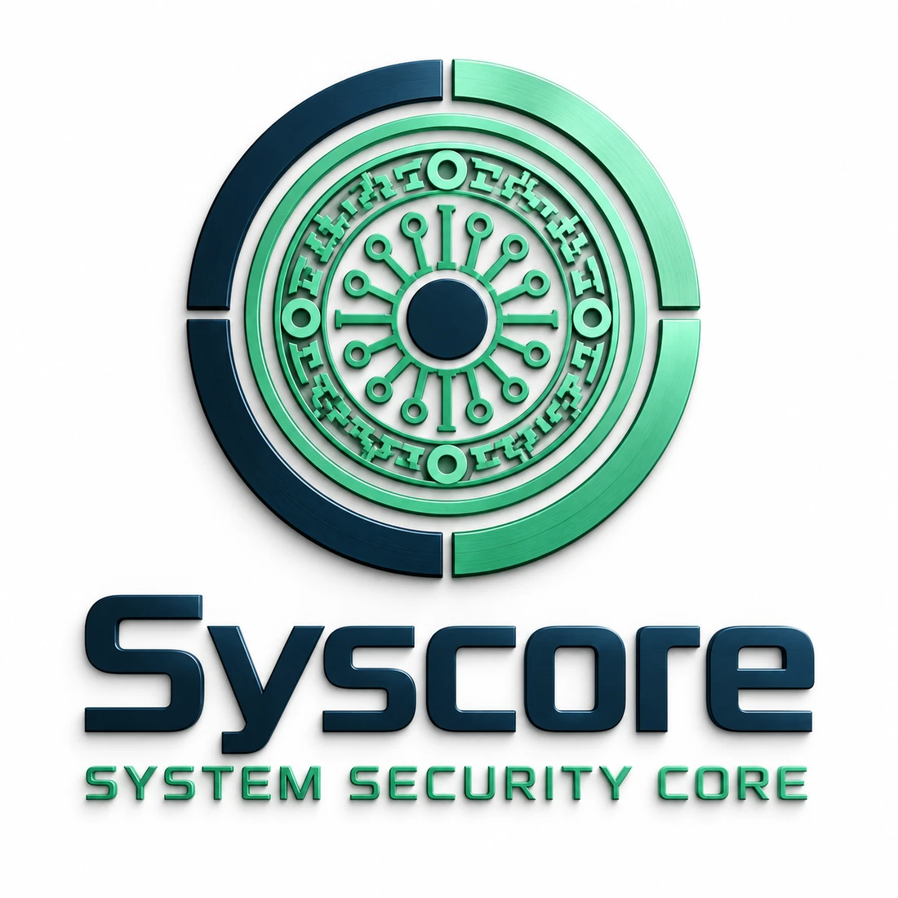

Погружение в инструменты
Лабораторные стенды, профильные курсы и знакомство с процессами центра мониторинга.

Защита цифровой инфраструктуры.
Развитие компетенций в кибербезопасности.

Шесть направлений, которые формируют основу Syscore — от анализа событий до развития культуры безопасности.
Наблюдение за событиями безопасности, анализ журналов и выявление подозрительной активности. Основа для своевременного обнаружения инцидентов.
Сбор и сопоставление сведений об угрозах, работа с индикаторами компрометации и обогащение событий. Контекст, который помогает расставить приоритеты защиты.
Анализ причин инцидента, сбор технических артефактов и подготовка сценариев реагирования. Рекомендации по локализации угрозы и восстановлению работы.
Настройка средств защиты, укрепление конфигураций и контроль уязвимостей. Отдельное внимание — рабочим станциям, персональным данным и предотвращению утечек.
Оценка текущего состояния безопасности, разработка внутренних политик и приоритизация рисков. Понятные рекомендации для технических специалистов и руководства.
Практическая подготовка будущих специалистов и обучение сотрудников организаций. Лабораторные задания, обезличенные кейсы и работа под руководством наставников.
Syscore — проект самостоятельного центра информационной безопасности в Казахстане. В его основе — объединение прикладных задач бизнеса и практической подготовки специалистов.
Развиваем модель, в которой анализ угроз, защита инфраструктуры и обучение дополняют друг друга. От понимания риска — к осмысленным действиям.
Бережная работа с данными
и разграничение доступа.
Согласованный объём работ
и понятная отчётность.
Рекомендации, связанные
с задачами организации.
Планируем образовательную среду, где теория встречается с задачами кибербезопасности.
Учиться.
Исследовать.
Защищать.
Лабораторные стенды, профильные курсы и знакомство с процессами центра мониторинга.
Анализ логов, разбор обезличенных инцидентов и технические отчёты под контролем наставника.
Исследования, курсовые и дипломные работы на основе задач информационной безопасности.
Проект предусматривает взаимодействие с МУИТ и профессиональным сообществом. Формат участия определяется отдельными соглашениями.
Задачи бизнеса.
Образовательные инициативы.
Профессиональное сотрудничество.
Контакты команды появятся здесь
после открытия центра.